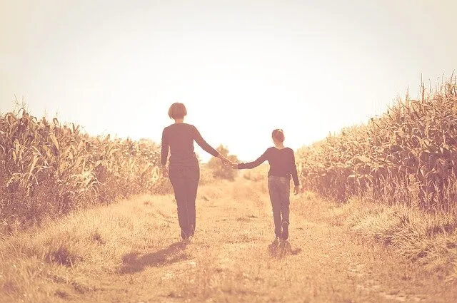

El viaje comienza en nosotras/os, en nuestra historia, en nuestra infancia…
Escucharnos para así poder escucharlos/as…
Indagar sobre ello y desde ahí comprendernos, respetarnos y amarnos, nos proporciona señales necesarias para una resignificación de nuestra mirada hacia la infancia y todo ese mundo fascinante sobre la experiencia de ser niños y niñas. El emprender este camino, nos abre la puerta hacia el deleite por observar-se, escuchar-se, silenciar-se, conscientizar-se y con ello también la de comprometernos con la responsabilidad empoderada de educar.
Esa niña/o interior es quien nos recuerda una y otra vez la amalgama de colores, sabores, sonidos y sensaciones que ocurrieron en nosotros. Todas aquellas experiencias que vivenciamos, ya sean gratas o no tan así, nos construyeron en la mujer/hombre que somos hoy en día. Gracias a esa niña/o, quien se ha hecho presente, podemos alcanzar una comprensión mucho más profunda y fidedigna de los grandes maestros que son.
El revisar nuestros dolores, nuestras alegrías, nuestras luces, nuestras oscuridades, es parte de la responsabilidad social que debemos tener con y para el mundo.
Los niños y las niñas necesitan adultos sanos y con sus niños interiores aceptados, florecidos y más presentes que nunca.
Día a día debemos cuidarnos para compartir nuestra mejor versión, donde los errores valen y donde el amor por la transformación propia y del presente son fundamentales.
Si conscientizamos nuestra individualidad de manera amorosa, integrando toda nuestra historia y sosteniendo con valor a esa niña/o que fuimos, y que sigue estando ahí, aportaremos al desarrollo integral de nuestra infancia.
¿Porqué? Porque al adentrarnos en esos recuerdos de juegos, exploraciones, descubrimientos, sorpresas, libertades, alegrías, magias, etc., nos invita a escuchar esas necesidades atávicas e inherentes de todo niño/a. Nos sumerge en un océano de experiencias que nos
permitirán comprenderlos más y dejar el “adultocentrismo” a un lado para dar paso a un encuentro empático.
No se trata de hacer más, se trata de hacerlo diferente, donde ellos y ellas, ¡Existan! Que sean protagonistas.
El yoga nos invita a incorporar la constante reflexión sobre la mirada que tenemos del mundo, de nosotros mismos y del camino elegido. Es tomar consciencia, es buscar hacia adentro, es una caja de herramientas para encontrarnos. Un medio para conocernos, EVOLUCIONAR.
¡Esa es la invitación! A cuidarnos y así facilitar experiencias integrales y transcendentes a nuestros niños y niñas.
Dejemos que nuestro pasado sea un baúl ¡repleto de riquezas! Riquezas para nosotros mismos, para otros, para otras.
¿Cómo hacemos todo esto?
Aquí algunas sugerencias que puedes integrar:
- Investigar sobre tu infancia, reuniendo acontecimientos importantes, vínculos que transcendieron y toda información que percibas que puede ser importante para ti.
- Practicar Yoga regularmente.
- Buscar instancias de ¡Juegos!, con niños-as y/o adultos.
- Observar constantemente a la Infancia: en plazas, escuelas, contextos familiares, etc.
- Escuchar diálogos infantiles.
- Estar con muchos niños y niñas. Interesarse por sus mundos: escuchar y preguntar.
- Apoyar la labor con bibliografía relacionada:
- “El niño olvidado” Mercedes Guzmán. “Encuentra el hogar para tu niño interior” Stefanie Stahl. “El arte de cuidar a tu niño” Tich Nhat Hanh.